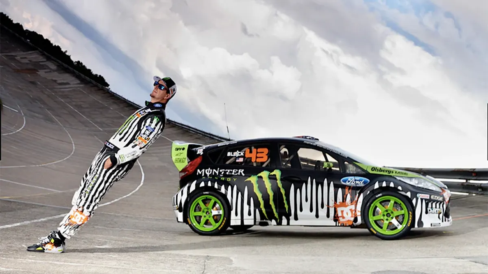
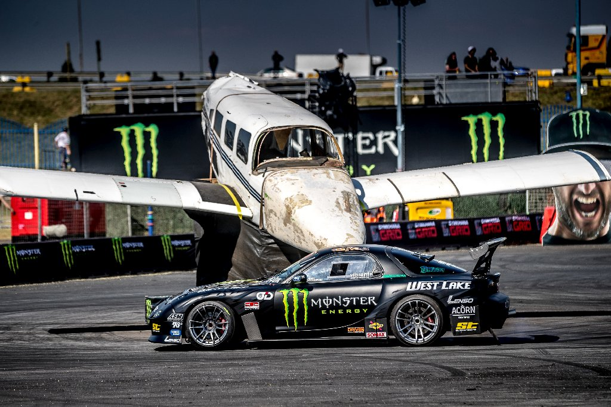

Le Gymkhana automobile est une discipline qui trouve son origine dans des épreuves de précision, inspirées à l’origine du monde équestre. En automobile, le principe consiste à réaliser un parcours technique composé d’obstacles, de virages serrés et de figures imposées, en mettant en avant la maîtrise du véhicule, la précision et le contrôle plutôt que la vitesse pure.
La version moderne et médiatisée du Gymkhana apparaît réellement à partir de 2008 grâce à Ken Block, pilote de rallye américain et entrepreneur. Cette année-là, il publie sur Internet une vidéo intitulée Gymkhana Practice, dans laquelle il réalise des enchaînements de drifts, de demi-tours et de manœuvres spectaculaires sur un circuit fermé. À l’origine, l’objectif n’était pas de créer une compétition, mais de montrer le pilotage automobile d’une manière nouvelle, proche des vidéos de sports extrêmes.
Le succès est immédiat et entraîne la création d’une véritable série de vidéos Gymkhana. Chaque nouvel épisode devient plus ambitieux que le précédent, avec des voitures toujours plus puissantes et modifiées, des lieux emblématiques à travers le monde et des mises en scène très travaillées. Ken Block change également de constructeurs au fil des années, passant notamment de Subaru à Ford, et pilote des véhicules devenus mythiques comme la Hoonicorn ou la Hoonitruck. Les vidéos cumulent des millions de vues et contribuent fortement à populariser le drift et le pilotage de précision auprès du grand public.
Parallèlement, le Gymkhana ne reste pas seulement un spectacle vidéo. En 2010, une version compétitive appelée Gymkhana Grid voit le jour. Elle reprend les principes du Gymkhana mais sous forme de courses chronométrées sur des parcours fermés, organisées dans plusieurs pays. Cela permet de structurer la discipline et de lui donner une reconnaissance sportive.
Au fil des années, le Gymkhana devient un phénomène culturel mondial. Il influence la manière de filmer l’automobile, inspire de nombreux pilotes et créateurs de contenu, et marque durablement la culture automobile moderne. Même après le décès de Ken Block en 2023, son héritage reste très présent, et le Gymkhana demeure associé à l’image d’un pilotage spectaculaire, créatif et extrêmement technique.

Le Gymkhana automobile est devenu une véritable légende grâce à sa manière unique de mettre en valeur le pilotage. Contrairement aux courses classiques axées sur la vitesse, le Gymkhana repose sur la précision, le contrôle et le spectacle. Les pilotes doivent enchaîner des figures complexes comme les drifts, les demi-tours ou les passages au millimètre près des obstacles, montrant une parfaite maîtrise de leur voiture. Cette discipline a su captiver le public en transformant la conduite automobile en un véritable art visuel.

La légende du Gymkhana s’est surtout construite autour de Ken Block, figure emblématique qui a révolutionné l’image du sport automobile. À partir de 2008, ses vidéos Gymkhana ont marqué Internet par leur originalité, leur qualité de réalisation et leur intensité. Chaque épisode repoussait les limites, avec des voitures toujours plus puissantes et des décors impressionnants à travers le monde. Ken Block n’était pas seulement un pilote, mais un créateur de spectacles automobiles, ce qui a contribué à faire du Gymkhana un phénomène mondial.

Avec le temps, le Gymkhana est devenu bien plus qu’une série de vidéos : c’est une culture à part entière. Il a inspiré des compétitions officielles, de nouveaux pilotes et toute une génération de passionnés d’automobile. Aujourd’hui encore, le Gymkhana reste associé à l’idée de liberté, de créativité et de maîtrise extrême du pilotage. Sa légende perdure comme un symbole moderne du sport automobile spectaculaire, où la technique et le style comptent autant que la performance.